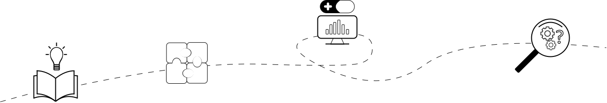

Mission and vision
Our mission is to develop and apply cutting-edge computational tools to understand cancer biology, patient stratification, and accelerate the discovery of personalized treatment strategies. We aim to leverage the power of data science, machine learning, and systems biology to decode the complexities of cancer and improve patient outcomes.
Core values

Integrity
We are committed to conducting our research with the highest ethical standards, ensuring transparency, reproducibility, and rigour in all our work.
Open science
Our lab is dedicated to the principles of open science, ensuring that our findings, tools, and datasets are accessible to the broader scientific community. We believe in the power of collaboration and transparency to accelerate progress in cancer research.
Translational impact
Our work bridges the gap between data and patient care. We are committed to translating computational insights into actionable strategies that improve outcomes for cancer patients worldwide.
Curiosity-driven research
We value curiosity as the engine of discovery. Our lab members are encouraged to ask bold questions and pursue novel ideas, guided by the belief that foundational research fuels transformative progress.
Lab culture
Inclusivity and diversity:
We are dedicated to creating a welcoming and supportive environment where diverse perspectives and backgrounds enrich our science. We believe that inclusivity fuels creativity and drives scientific excellence.
Collaboration:
We believe that the most significant breakthroughs arise from teamwork and interdisciplinary cooperation. Our lab fosters an environment where biologists, data scientists, computer scientist and clinicians work together, sharing ideas and expertise to tackle the complexities of cancer.
Respect and openness:
Our lab thrives on a foundation of mutual respect and open communication. Every team member's voice is valued, and we encourage the exchange of ideas in a supportive and constructive manner. We believe that respect fosters collaboration, innovation, and trust, creating a space where individuals feel comfortable sharing their thoughts, challenges, and successes.
Work-life balance:
Our lab recognises that creativity and productivity thrive when researchers maintain a healthy balance between work and personal life. We encourage flexible working hours, respect individual boundaries, and support mental and physical well-being. By promoting a culture of balance, we aim to prevent burnout and sustain a vibrant, collaborative, and innovative team.
Mentorship:
We are committed to fostering the professional and personal development of all lab members. Through mentorship, skill-building, and collaborative learning, we aim to inspire the next generation of scientists to achieve their full potential. There is no universal formula that can serve everyone, mentorship must be something fluid and adapted to each circumstance. Our mentoring approach will be tailored for each individual and built on the pillars of clear expectations, open communication, and integrity.